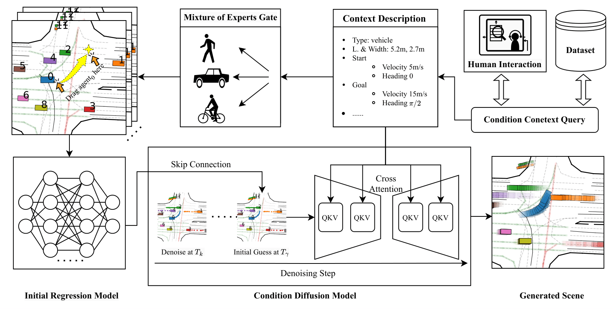
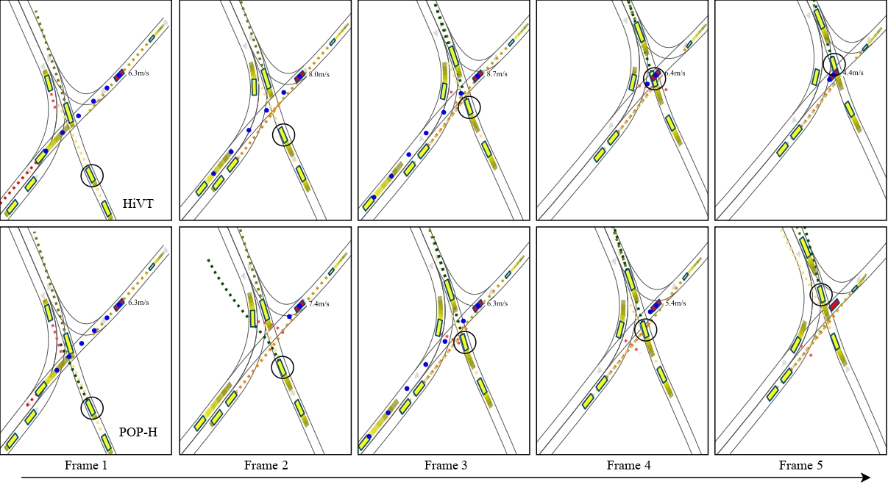

Dragtraffic: A Non-Expert Interactive and Point-Based Controllable Traffic Scene Generation Framework
- Sheng Wang
- Ge SUN
- Fulong MA
- Tianshuai Hu
- Yongkang Song
- Ming Liu
Hong Kong University of Science and Technology, IADC
Abstract & Method
The evaluation and training of autonomous driving systems require diverse and scalable corner cases. However, most existing scene generation methods lack controllability, accuracy, and versatility, resulting in unsatisfactory generation results. To address this problem, we propose Dragtraffic, a generalized, point-based, and controllable traffic scene generation framework based on conditional diffusion. Dragtraffic enables non-experts to generate a variety of realistic driving scenarios for different types of traffic agents through an adaptive mixture expert architecture. We use a regression model to provide a general initial solution and a refinement process based on the conditional diffusion model to ensure diversity. User-customized context is introduced through cross-attention to ensure high controllability. Experiments on a real-world driving dataset show that Dragtraffic outperforms existing methods in terms of authenticity, diversity, and freedom.

Case Analysis
We demonstrate a scenario in our simulator where a self-driving vehicle navigates through a congested traffic intersection, as shown in Figure \ref{fig}. During the initial phase of the simulation, the AV intends to traverse the intersection with a planned speed of 6.3 m/s. However, due to insufficient observation, the HiVT predictor inaccurately predicts the future trajectory in the first two frames. As a result, the AV fails to account for the movement of the vehicle below and begins to accelerate. By frame 3, the speed has already reached 8.7 m/s, making it too late to decelerate and leading to a collision. In contrast, the AV with the POP-H predictor consistently provides more reasonable predictions (indicated by the black scatter line) from frame 1 to frame 5, ensuring a higher level of safety.

More Animations

HiVT

POP-H

HiVT

POP-H

HiVT

POP-H

HiVT